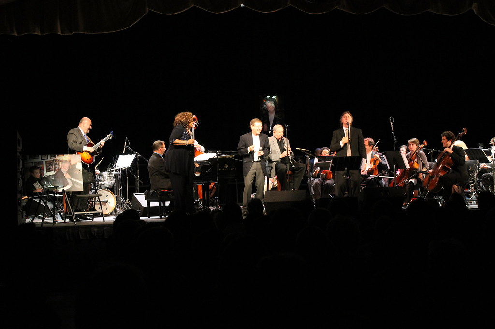

Музыка · 35-бөлім · Концерт Music · Section 35 · Concerto Музыка · Раздел 35 · Концерт
🎹 Концерт: солист және оркестр
🎹 The Concerto: Soloist and Orchestra
🎹 Концерт: солист и оркестр
Концерт (жанр) — солист пен оркестрдің «жарысы»: кезек-кезек сөйлесу мен виртуоздық. The concerto (a genre) is a "contest" between a soloist and an orchestra: a turn-taking dialogue and virtuosity. Концерт (жанр) — «соревнование» солиста и оркестра: диалог по очереди и виртуозность.
🎻 Концерт деген не? 🎻 What Is a Concerto? 🎻 Что такое концерт?
Концерт (жанр ретінде) — солистке (немесе бірнеше солистке) және оркестрге арналған ірі шығарма. A concerto (as a genre) is a large work for a soloist (or several soloists) and an orchestra. Концерт (как жанр) — крупное произведение для солиста (или нескольких солистов) и оркестра.
Оның негізі — солист пен оркестрдің диалог-«жарысы»: олар кезек-кезек сөйлеседі. Its core is a dialogue-"contest" between the soloist and the orchestra: they take turns speaking. В его основе — диалог-«соревнование» солиста с оркестром: они говорят по очереди.
Әдетте 3 бөлімнен тұрады: жылдам – баяу – жылдам. It usually has 3 movements: fast – slow – fast. Обычно состоит из 3 частей: быстрая – медленная – быстрая.
⚠️ Шатастырмаңыз! Жанр ретіндегі «концерт» — бұл шығарма. Ал «концертке бару» дегендегі концерт — бұл қойылым (выступление), мүлдем басқа мағына. ⚠️ Don't confuse them! A "concerto" as a genre is a piece of music. But "going to a concert" means a performance/show — an entirely different meaning. ⚠️ Не путать! «Концерт» как жанр — это произведение. А концерт как «пойти на концерт» — это выступление, совсем другое значение.

🎧 Солист пен оркестр кезектесуі 🎧 Soloist and Orchestra Take Turns 🎧 Чередование солиста и оркестра
🎧 солист пен оркестр кезектесіп ойнайды the soloist and the orchestra alternate солист и оркестр чередуются
💡 Каденция — оркестрсіз ойналатын виртуоздық жеке эпизод: солист өз шеберлігін көрсетеді. Тутти — бүкіл оркестр бірге ойнаған кезі. 💡 A cadenza is a virtuosic solo episode (without the orchestra) where the soloist shows off their skill. Tutti is when the whole orchestra plays together. 💡 Каденция — виртуозный сольный эпизод (без оркестра), где солист демонстрирует мастерство. Тутти — когда играет весь оркестр.
🗂 Терминдер және концерт түрлері 🗂 Key Terms and Types of Concerto 🗂 Термины и виды концерта
| ТерминTermТермин | МағынасыMeaningЗначение |
|---|---|
| КаденцияCadenzaКаденция | оркестрсіз виртуоздық жеке эпизодa virtuosic solo episode without orchestraвиртуозный сольный эпизод без оркестра |
| ТуттиTuttiТутти | бүкіл оркестр бірге ойнайдыthe whole orchestra plays togetherиграет весь оркестр |
| СолистSoloistСолист | басты орындаушы, оркестрмен «сөйлеседі»the main performer who "talks" with the orchestraглавный исполнитель, «беседует» с оркестром |
| 3 бөлім3 movements3 части | жылдам – баяу – жылдамfast – slow – fastбыстрая – медленная – быстрая |
Концерттер солист аспабы бойынша түрлерге бөлінеді: Concertos are divided into types by the solo instrument: Концерты делятся на виды по солирующему инструменту:
ФортепианоPianoФортепианный
🎵СкрипкаViolinСкрипичный
🎵ВиолончельCelloВиолончельный
🎵📌 Сонымен қатар флейта, керней (труба) және басқа аспаптарға арналған концерттер де бар. 📌 There are also concertos for flute, trumpet and other instruments. 📌 Бывают также концерты для флейты, трубы и других инструментов.